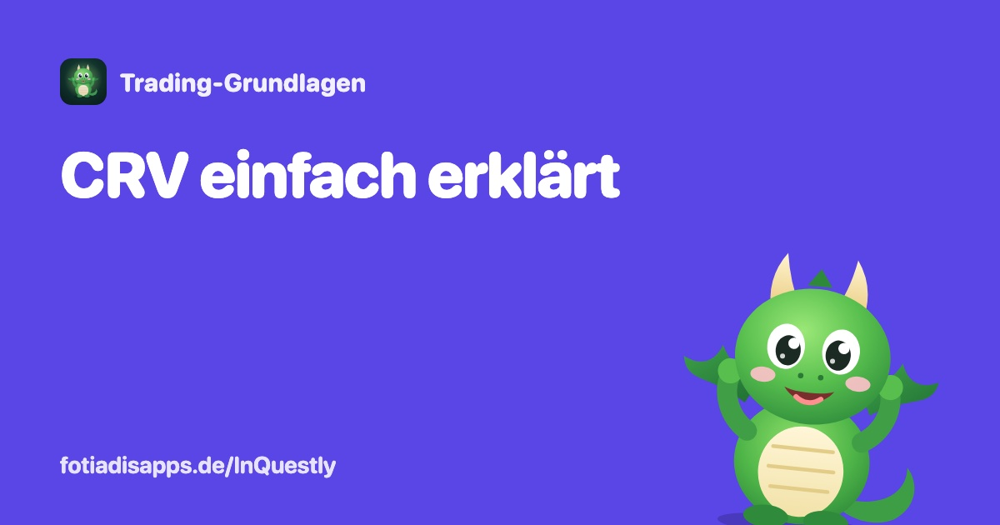

InQuestly Blog
Börse verständlich erklärt
Charts, Kennzahlen und Risiko, Schritt für Schritt erklärt. Jeder Artikel endet mit dem, was du direkt üben kannst.
 Einstieg
EinstiegBörse lernen: Der Einstieg in 7 Schritten
Du willst verstehen, was an der Börse passiert, aber nicht gleich Geld riskieren? Diese 7 Schritte bringen dich vom ersten Begriff bis zum ersten Chart.

Trading-GrundlagenChance-Risiko-Verhältnis (CRV) einfach erklärt, mit Rechenbeispiel
Vor jedem Trade stellen Profis zwei Fragen: Was kann ich verlieren, und was kann ich gewinnen? Das Chance-Risiko-Verhältnis setzt beides ins Verhältnis.
 Charttechnik
CharttechnikKurslücken (Gaps): Die vier Gap-Typen einfach erklärt
Manchmal springt ein Kurs über Nacht auf ein neues Niveau. Solche Kurslücken verraten viel über die Stimmung, wenn man die vier Typen auseinanderhalten kann.
 Risikomanagement
RisikomanagementPositionsgröße berechnen: Die 1-Prozent-Regel einfach erklärt
Wie viel du bei einem Fehltrade verlierst, entscheidet nicht der Einstieg, sondern die Positionsgröße. So rechnen Profis sie in drei Schritten aus.